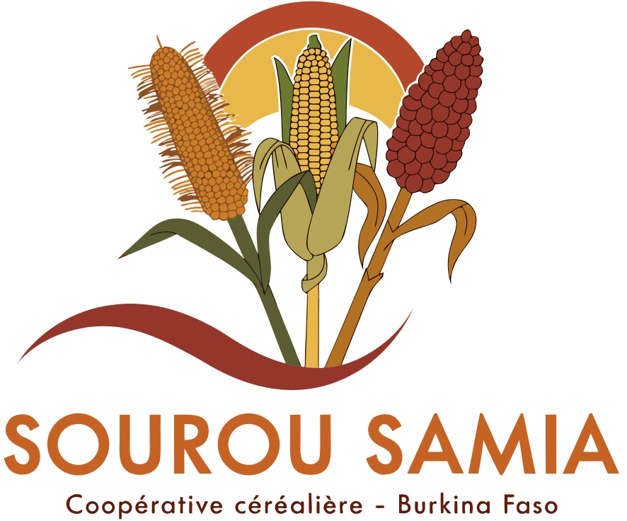

VALLÉE DU SOUROU · BURKINA FASO
Sourou
Samia.
Du travail de nos champs à la prospérité de nos familles.
LA COOPÉRATIVE
Le grainier
collectif.
SOUROU SAMIA rassemble les producteurs autour d'une ambition commune : valoriser les céréales de la vallée et faciliter leur rencontre avec les acheteurs.
Découvrir notre mission
PLUVIOMÉTRIE OBSERVÉE · ANAM-BF
Saison des pluies 2026
Du 1er avril au 27 septembre 2026 : quelques poches excédentaires sont signalées dans le Sourou par rapport aux mêmes dates de 2025. Le bulletin ne donne pas de total chiffré propre à Tougan.
Consulter le bulletin ANAM-BF · période du 28 septembre au 4 octobre 2026
281,8
mm · minimum national
Djibasso · 42 jours de pluie
Djibasso · 42 jours de pluie
1 011,8 mm
maximum national
Bobo-Dioulasso · 67 jours
maximum national
Bobo-Dioulasso · 67 jours
MAÏS · SORGHO · PETIT MIL
Les céréales du Sourou.
ACHETEURS · COOPÉRATIVE
La rencontre
commence au champ.
Découvrez les céréales, leurs prix et préparez une visite pour échanger avec la coopérative.
Préparer une visite